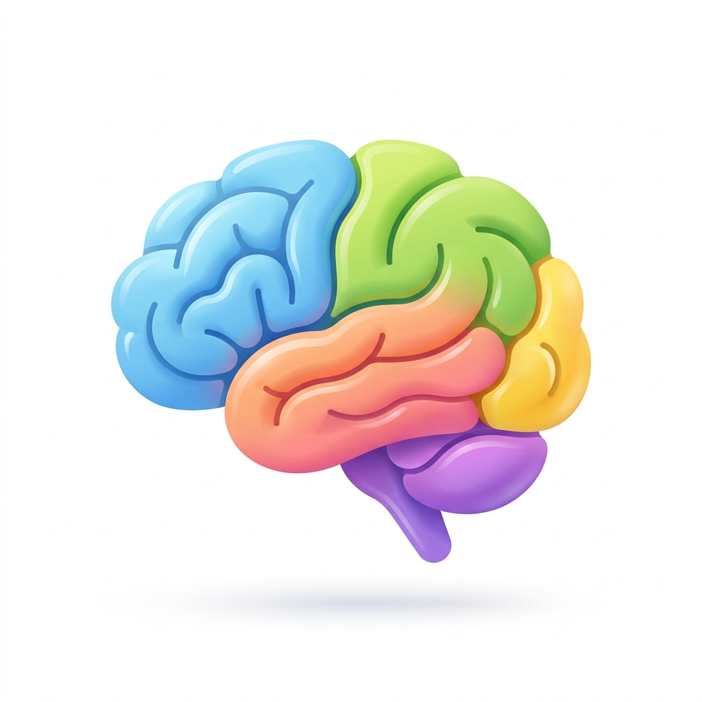
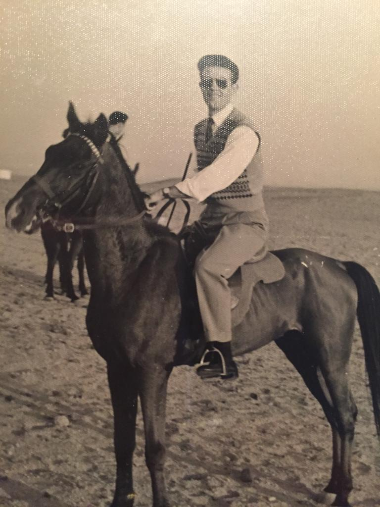
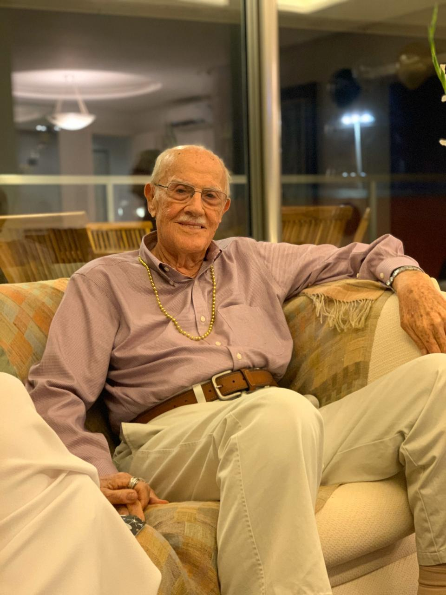
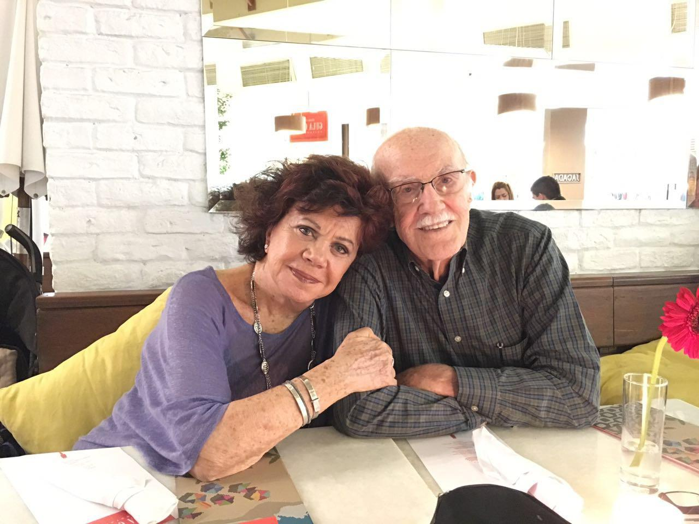
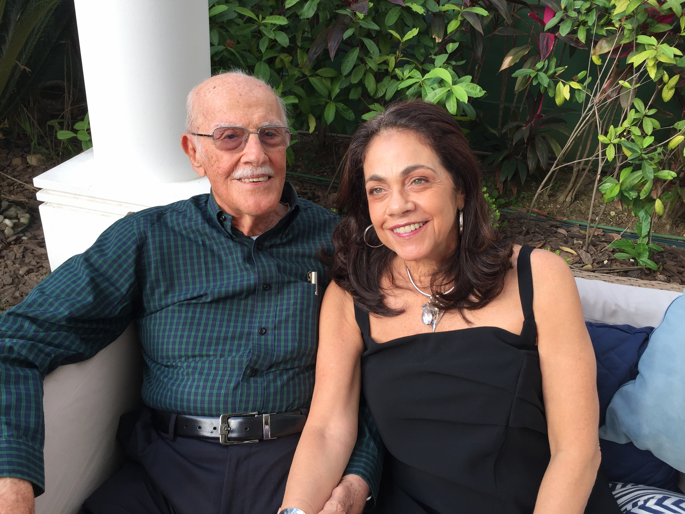
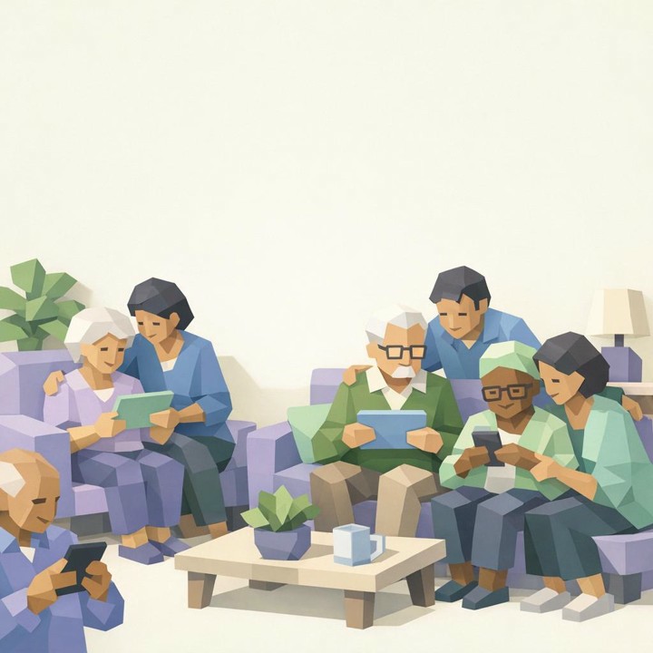

Discover MindSpring
Keeping minds active with dignity and joy
With over 55 million people worldwide experiencing cognitive decline—and cases projected to reach 139 million by 2050 as the global population ages—memory preservation is more critical than ever. MindSpring integrates interactive stimulation games, daily reflection journals, and secure memory albums to support independent cognitive health with dignity and peace of mind.
We set out to create a solution that is encouraging, intuitive, and enjoyable to use. Today, MindSpring combines cognitive exercises, memory tools, and features that encourage social interaction and meaningful daily activities.
MYLNOUSS Features
Discover how our beautifully designed tools provide comfort, connection, and cognitive engagement.
🖼️ Photo Collection & Usage Quotas
Create a living album filled with familiar faces and cherished memories. Invited loved ones can securely contribute photos. To keep you informed, our built-in Usage Quotas tracker monitors your photo limits and distinguishes between Admin and Guest uploads.
🧠 Personalized Brain Games & Crosswords
Keep the mind agile with a suite of cognitive exercises including trivia, photo memory, and our newly implemented dynamic Crossword puzzles. Our engine automatically tailors the grid layout, numbers, and clues to match the user's specific life experiences.

📖 Daily Reflection Journals
Encourage daily reflection and social connection with our Daily Journals. Record notes every day to promote active brain activity. Your daily inputs are securely stored and factored into your long-term wellness consistency score.
👥 Secure Guest Permissions
Securely invite up to 5 family members and guests through unique token links. You retain full control over each guest's capabilities via the Guest Management panel, allowing you to independently toggle their permissions to post photos, play games, or read journals.
📊 Advanced Wellness & Log Reports
Turn daily activities into actionable insights! Our comprehensive Wellness Report tracks game completion rates and journaling consistency. Furthermore, our invisible Log Report tracks system access seamlessly, differentiating between Admins, Main Users, and Guests without requiring cumbersome login screens.
Our Story
A family passion project inspired by the journey of a loved one.

Preserving Dignity
My father, a former International Director of Sales for a multinational company, was reluctant to engage in the activities suggested by my mother and his guests. Given his background and accomplishments, the exercises felt childish, impersonal, and even humiliating.

The Inspiration
MindSpring was inspired by my father’s journey through cognitive decline. As I stood by him, I witnessed not only the struggle of gradually losing parts of himself, but also the lack of dignified tools and exercises available to help delay its progression.

The Conception
That experience led me to create MindSpring — a platform designed to preserve identity, dignity, and connection through meaningful exercises rooted in the individual’s own life, experiences, routines, and personal history.

A Spring of Hope
"It is my sincere hope that this app, like a spring, represents renewal, awakening, flow, and the life-giving energy needed to keep the human spirit afloat."
- Mauricio Y. Levi, Founder
Our Mission
Slowing cognitive decline and preserving identity through positive mental activity.

Scientific research suggests that cognitive stimulation and meaningful mental engagement may help individuals experiencing cognitive impairment maintain their abilities, remain socially connected, and preserve aspects of their independence and personal identity for a longer period of time.
While mental exercises cannot cure the underlying neurodegenerative disease, they may help slow cognitive decline, support daily functioning, encourage social interaction, and improve overall quality of life.
MindSpring's mission is to provide personalized cognitive exercises and meaningful interactions inspired by each individual's life experiences, memories, interests, family relationships, and personal history.
MindSpring Q&A
Answers to frequently asked questions regarding administration and usage.
Q1: Who should set up the MindSpring account?
A: The account should be set up by the main user whenever possible, or by the nearest family member living in the household. To ensure the highest level of privacy and security, we do not encourage external guests or helpers to open the account. Furthermore, the account must be created directly on the user's personal computer to establish the correct secure login environment.
Q2: Why is setting up my profile important?
A: The User Profile drives the entire MindSpring experience, so it is absolutely essential that all information provided is true, accurate, and honest. All AI interactions, games, and memories are dynamically generated based on this specific information, so taking the time to set it up truthfully ensures a deeply personalized and rewarding experience.
Q3: What is the correct sequence of inputs for setup?
A: It is crucial to carefully follow the "Input & Setup" steps in order: first enter the Basic Information, manage the album, and invite guests and family members.
Q4: How do I manage the album?
A: Please note that managing the album may be done gradually; however, the more photos uploaded, the better the experience. Additionally, you can invite up to 10 friends and family members to help add more photos to the collection.
Q5: Can other family members participate?
A: Yes! The person who sets up the account can invite other family members as Guests or Friends & Family via email invitation links. Once registered, Guests can log in using their Username and Password to play cognitive stimulation games and activities with the user, while Friends & Family can log in to upload photos. Guests do not have the administrative capability to add family, friends, or other guests.
Q6: How does the Daily Journal work?
A: It provides gentle prompts to encourage daily reflection, social connection, and healthy habits. We strongly encourage the user to make daily notes, or ask a loved one to input notes for them. This daily exercise promotes active brain activity and provides valuable information to help track the user's specific interests over time. Your journal history is securely stored for up to 30 days.
Q7: Are the brain games too difficult?
A: No, our AI seamlessly tailors the difficulty and content to match the user's specific age, background, and life experiences.
Q8: How is progress tracked?
A: The person managing the account has access to a Wellness Report that summarizes engagement, participation, and cognitive activity over time.
Q9: What is the specific role of the Admin?
A: The Admin (Primary Caregiver) sets up and configures the system on behalf of the Main User (Patient). This includes initializing their profile parameters (hobbies, career, favorite food) to fuel AI customization, uploading initial photos, and inviting other guests. Additionally, the Admin is encouraged to play cognitive activities side-by-side with the Main User using the interactive 2-Player turn tracker.
Q10: How do we play games together side-by-side?
A: On any game page, select "Play Together (2 Players)" on the game mode card. This displays the Pass & Play turn tracker bar at the top. The active player alternates automatically (with a gentle 1.8-second delay) after game answers or clicks, making it easy for two people to take turns on a single tablet or computer.
Q11: What is the difference between the Admin and a Guest?
A: The Admin manages patient profiles, configures call connection buttons, invites new family members, and views Wellness/Usage Reports. Guests (invited family/friends) log in using their own credentials to play cognitive games side-by-side with the patient or upload photos, but they have no administrative access to system parameters or reports.
Q12: How can the Main User log in independently?
A: The Main User (Patient) can play games independently by logging in via Kiosk mode. Selecting the "Kiosk PIN mode" portal and entering their dedicated 4-digit PIN code launches their simplified activities dashboard instantly without requiring password entries.
Q13: How do the subscription plans work?
A: MindSpring offers three flexible subscription tiers: Free, Premium ($19/mo), and Gold ($29/mo). Higher tiers unlock expanded photo storage, guest invitation links, and advanced AI interaction features—such as personalized AI Story Builder dictation, dynamic game difficulty tuning, custom trivia generation, and full wellness analytics.